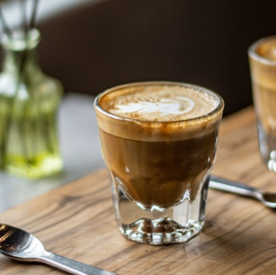
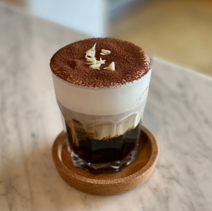
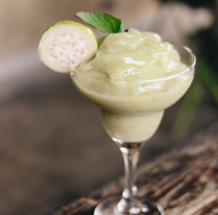
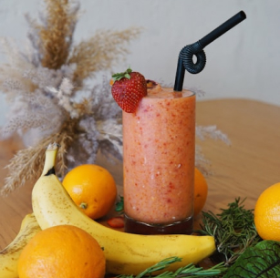
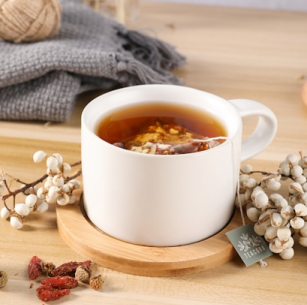

한 잔의 커피, 그 안에 담긴 여유와 따뜻함.
깊고 은은하게 번지는 향이 마음을 감싸며,
오늘의 순간을 특별하게 만들어줍니다.
커피 한 모금에 담긴 작은 행복을 느껴보세요.
카페 호이는 매장에서 직접 로스팅한 신선한 원두로, 본연의 풍미를 살린 한 잔을 제공합니다.
정성을 다해 준비한 시그니처 음료와 특별한 디저트는 오직 카페 호이에서만 만날 수 있습니다.
따뜻하고 편안한 공간에서, 여유와 감성을 느낄 수 있는 시간을 선사합니다.
늘 특별한 하루를 함께 만들어가고자 합니다.
시그니처 커피&음료
카페 호이 시그니처 라떼 CAFE HOI Signature Latte
카페 호이의 시그니처 카페 라떼는 신선하게 로스팅한 원두로 깊고 부드러운 풍미를 담아내었습니다. 고소한 우유 거품과 조화롭게 어우러져, 매끄럽고 크리미한 텍스처가 특징입니다. 커피 본연의 맛을 담아내며, 누구나 편안하게 즐길 수 있는 라떼를 선사합니다.
직접 로스팅한 원두를 사용해 매일 신선함을 유지합니다. 따뜻한 온기와 깊은 맛을 동시에 느낄 수 있는 카페 호이만의 특별한 라떼입니다.

코르타도 Cortado
카페 호이의 코르따도는 진한 에스프레소와 부드러운 스팀 밀크의 완벽한 조화로 만들어집니다. 커피 본연의 깊은 맛을 유지하면서도, 우유의 크리미함이 더해져 균형 잡힌 풍미를 선사합니다. 작지만 강렬한 한 잔으로 스페인의 정취를 느껴보세요.
신선한 원두로 로스팅한 에스프레소에 우유를 살짝 더해, 부담 없이 즐길 수 있는 스페인식 커피입니다. 짧은 시간에도 진한 커피의 여운을 느끼고 싶은 분께 추천드립니다.

화이트 초콜릿 아인슈페너 White chocolate Einspanner
카페 호이의 화이트 초콜릿 아인슈페너는 진한 에스프레소와 부드러운 화이트 초콜릿 크림의 완벽한 조화를 자랑합니다. 달콤하고 풍부한 크림이 커피의 깊은 맛과 어우러져, 한 잔으로 특별한 여유를 선사합니다.
에스프레소의 쌉싸름한 맛과 자연스러운 단맛이 조화를 이룹니다. 달콤한 디저트처럼 즐길 수 있는 이 음료는 커피와 디저트의 매력을 동시에 느낄 수 있는 특별한 메뉴입니다.

키위 프라페 Kiwi Frappe
카페 호이의 키위 프라페는 신선한 키위의 상큼함과 시원한 프라페의 부드러움을 한 잔에 담았습니다. 자연 그대로의 달콤한 키위 맛이 입안 가득 퍼지며, 상쾌함을 선사합니다. 건강하고 산뜻한 에너지를 느낄 수 있는 특별한 음료입니다.
매일 손질한 신선한 키위를 사용하여 더욱 자연스러운 맛을 제공합니다. 지친 하루에 활력을 더해줄 상큼한 한 잔을 카페 호이에서 만나보세요.

생과일 주스 Fresh Fruit Juice
카페 호이의 생과일 주스는 신선한 딸기와 바나나를 듬뿍 담아 자연의 달콤함을 전합니다. 상큼한 딸기와 부드러운 바나나의 완벽한 조화로 건강하고 맛있는 한 잔을 즐길 수 있습니다. 한 모금마다 과일의 싱그러움이 느껴지는 특별한 주스입니다.
첨가물 없이 신선한 과일만을 사용해 자연 그대로의 풍미를 제공합니다. 바쁜 일상 속 상쾌함과 에너지를 채우기에 딱 좋은 선택입니다.

허브 차 Herb Tea
카페 호이의 허브 차는 자연에서 얻은 신선한 허브로 만들어, 마음을 편안하게 해주고 몸과 마음에 활력을 불어넣어줍니다. 잔잔한 향과 은은한 맛이 힐링의 순간을 선사합니다.
매장에서 엄선한 다양한 허브 블렌드로, 각각의 차가 고유의 풍미와 효과를 제공합니다. 스트레스 해소, 숙면, 면역력 강화 등 일상 속 건강을 돌볼 수 있는 허브 차를 만나보세요.